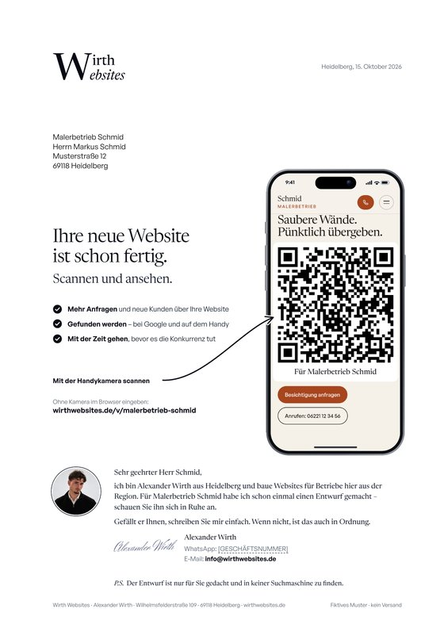

Beispiel 1
Malerbetrieb Schmid
Hauptbrief v6 (brief/vorlage.html) für einen fiktiven Betrieb: kurze Headline »Für … liegt schon etwas bereit.«, drei Punkte, Handy (92 % Originalgröße) mit einem echten Bildschirmfoto der generierten Website und dem QR-Code mittig darauf, persönlicher Text mit Foto, Kundenstimme, Kontakt per WhatsApp und E-Mail. Geprüft für LetterXpress und Pingen, QR mit zbarimg vom PDF gelesen.